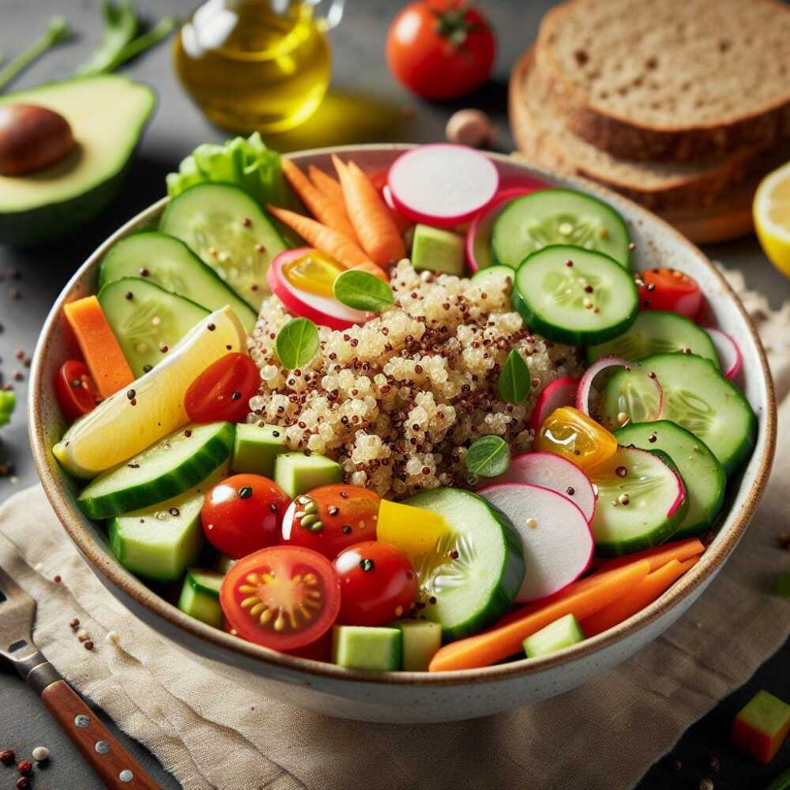

Receta de Tacos al Pastor

Los tacos al pastor son uno de los platos más populares en México. Hechos con carne de cerdo adobada y asada, se sirven con piña, cilantro y cebolla. Este plato es un clásico en las taquerías y una opción deliciosa para cualquier ocasión.
Restaurantes de Comida Rápida Saludable

La comida rápida está cambiando. Restaurantes alrededor del mundo ofrecen opciones más saludables, con ingredientes frescos y menos procesados. Desde ensaladas hasta bowls nutritivos, ahora es posible disfrutar de la rapidez sin sacrificar la salud.